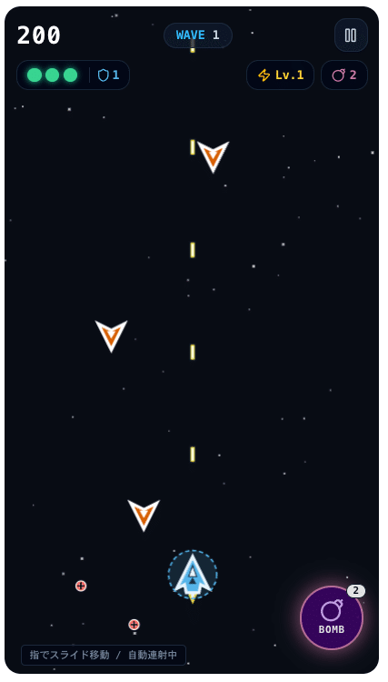

デジクリゼミ 2026 / 第3回 ゲーム
障害のある人と学ぶデジクリゼミことばから、
遊べる作品へ。
AIと、自分好みのゲームをつくろう。
2026年10月20日（火）13:30–15:00 / 講師 伊藤 尚祐
はじめに
今日がはじめてでも、大丈夫。
01
はじめての人
画面を見ながら、
一緒にひとつずつ。
02
前回も来た人
操作を思い出して、
今日は「遊び方」を工夫しよう。
03
自分のペースで
見ているだけでも、
途中で休んでも大丈夫。
文字でも、声でも。困ったらチャットで知らせてください。
前回の振り返り / 10月6日 モーションアート・アニメ回
前回は、動く作品をつくった。
魚の群れや、宇宙の猫
好きな題材を選んで、
ながめて楽しむ作品づくり。
伝える → ためす → 変える
色や速さ、お話を変えて、
自分好みに工夫した。
 前回のモーションアートの参考例
前回のモーションアートの参考例参加した人は、変えたところをひとつ。初参加の人は、動かしてみたいものをひとつ。
講師紹介

伊藤 尚祐
日本アイ・ビー・エム株式会社 エンジニア
京都芸術大学 非常勤講師／テックルズ エンジニア
通信装置の研究開発、IoTサービス構築を経て、2022年に日本IBMへ。
2024年から京都芸術大学でAIによるアプリ開発を教え、テックルズで福祉の課題に取り組む。
好きなこと → 歴史。最近は、家族とのキャンプも。
テックルズで作ったアプリと、試してもらっている様子
誰もが創造性や表現力を発揮できる仕組みづくりへ。
みなさんの自己紹介
チャットに書いて、ひとこと話そう。
02
ふだんAIをどう使う？
使っているAIと、その使い道。
「はじめて」も歓迎です。
03
今日の期待
やってみたいこと、
楽しみにしていること。
書いた内容を、一人ずつ短く紹介してください。
今日の流れ
つくる → 遊ぶ → 自分好みに。
13:30–13:35事務局連絡5分
13:35–13:45振り返り・自己紹介・準備10分
13:45–14:15ゲームをつくる・遊んでためす30分
14:15–14:20ひと休み5分
14:20–14:45ゲームを改良／自由制作25分
14:45–14:55作品を見せ合う・全3回の振り返り10分
14:55–15:00事務局連絡5分
まずはひとつ動かしてみよう。後半は、改良か別のゲームを選べます。
今日のゴール
自分が遊びたいゲームにしよう。
01
まずは、ひとつつくる
宇宙のシューティングゲーム。
機体を動かして、
遊べるか確かめよう。
02
次は、自分で選ぶ
遊びやすく改良する？
好きな見た目に変える？
別のゲームに挑戦する？
はじめての人は一緒に操作。経験のある人は、ルールや難しさも工夫してみよう。
準備するもの
つくるための道具を、準備。
ネットにつながる端末
パソコン、タブレット、
スマートフォンのいずれか。
Google AI Studio の「Build」
Googleアカウントでログインします。
Buildを開く ↗
操作に迷ったら、講師やサポートする人に知らせてください。
Google AI Studioを開いたら
ここから、ゲームをつくります。

① New app
新しいアプリをつくる。
② 入力欄
つくりたいものを書く。
③ マイク
声で伝えてもOK。
赤い枠の場所を、一緒に見つけてみましょう。
13:45–14:15 / まずは生成を始めよう
宇宙のシューティングをつくろう。
Buildで新しい作品を開き、このお願いを送ります。
宇宙を舞台にしたシューティングゲームを作って。
左右キーや画面のボタンで機体を動かせて、
弾は自動で発射。かっこよくして。
送ったら、AIがつくるのを待ちます。
待っている間に、仕組みを見てみよう。
お願いの文章は、そのままコピーして使えます。
待ち時間に / 遊べる作品の仕組み
AIが書く。ブラウザが動かす。
AIがコードを書く
コード＝コンピューターへの
動かし方の指示。
ブラウザが描く・動かす
コードを実行して、
機体や弾を表示する。
キーを押す → コードが反応する → 画面の機体が動く。
今日はコードを書けなくてもOK。変えたいことを、ことばで伝えます。
待ち時間に / ゲームの3つの要素
「どう遊ぶ？」を考えよう。
できたゲームの操作・ルール・目標はどうなっているかな？ 遊んで確かめよう。
事前案内のサンプル
こんなゲームも、ことばから。
宇宙のシューティング
機体を動かして、弾をよける。
敵をねらって、得点を増やす。
あなたの画面は、どうなった？
操作方法を見つけて、
まずは短く遊んでみよう。

事前案内の参考例（静止画像）同じお願いでも、見た目やルールは変わります。この画面にそろえなくてもOK。
できたゲームをためす
「始める・遊ぶ・もう一度」を確認。
01
始められる？
操作方法は分かる？
スタートできる？
02
遊べる？
キーやボタンで動く？
得点やライフは変わる？
03
もう一度遊べる？
終わったあと、
最初からやり直せる？
できていないところが見つかったら、次のお願いにしよう。
前回と同じコツを、今日も
伝える → ためす → 変える。
01
ことばで伝える
「シューティングゲームを
つくって」
03
ひとつ変える
「敵の弾を半分の速さにして」
もう一度遊んで比べる。
「もっと簡単に」から一歩進めて、「何をどう変えるか」も伝えてみよう。
できた作品を修正する
遊んで、もうひとこと。

① Preview
右側で遊んで確かめる。
② 左下の入力欄
「敵の弾を遅くして」
とお願いする。
③ マイクでもOK
声で修正を伝える。
画面は第1回のToDoの例です。作品が変わっても、修正の流れは同じ。
困ったときは
できないことを、具体的に伝えよう。
01
まだ生成中・エラー
完了まで待とう。
エラーが出たら、その文を
添えて修正をお願いする。
02
操作できない
「右ボタンを押しても
機体が動きません。
直してください」
03
すぐに終わる
「敵の弾を遅くして」
「残りのライフを5にして」
ひとつずつ試そう。
どの操作で何が起きたかを伝えると、直したいところが分かりやすくなります。
ひと休み / 5分
ちょっと、ひと休み。
水を飲んだり、体を伸ばしたり。
画面から目を離して、ひと息。
5分後に再開します。
このあとは、ゲームの改良か、新しいゲームづくりへ。
14:20–14:45 / 自由制作 25分
ここからは、好きなほうへ。
A
今のゲームを、自分好みに
同じチャットでお願いを続けよう。
色やキャラクターを変えたり、
遊びやすくしたり。
B
別のゲームに挑戦する
Buildで新しい作品をつくろう。
好きなものと、
やってみたい遊びから。
ひとつをじっくり育ててもOK。まずは「ひとつ変えて、確かめる」を目標に。
工夫のヒント
自分にちょうどいい遊び方へ。
01
見やすく・押しやすく
「得点の文字を大きくして」
「左右ボタンを大きくして」
02
難しさを調整
「敵の数を少なくして」
「制限時間をなくして」
03
好きな世界に
「機体を猫の宇宙船にして」
「背景を星いっぱいにして」
ひとつ変えたら、同じ操作でもう一度遊んでみよう。
遊びやすさも、作品の工夫
遊ぶ人に合わせて、変えられる。
自分なら、何がほしい？
「いつでも一時停止できるようにして」
「音をオン・オフできるようにして」
「点滅しないようにして」
ほかの人にも遊んでもらうなら
操作の説明は伝わる？
急がずに遊べる？
もう一度遊びたいと思える？
上手に遊べるかだけでなく、心地よく遊べるかも確かめよう。
別のゲームのヒント
好きなもの × 遊び方。
集める
落ちてくる星を、かごで集める。
集めた数を数える。
たどり着く
猫がゴールを目指す迷路。
時間を気にせず探検する。
見つける
同じ絵を探すカードゲーム。
好きな動物の絵で遊ぶ。
はじめは、ひとつの遊びで十分。動いてから、工夫を足していこう。
アイデアを一緒に考えてもOK
使えるAIがあれば、相談しよう。
ChatGPT・Gemini・Claudeなど、使えるものでOK。
猫が好きです。短い時間で遊べる、簡単なゲームの
アイデアを3つ考えて。気に入った案を選んだら、
操作・ルール・目標を、Google AI Studioに伝える
短いお願いにまとめて。
好きな案を自分で選んで、Buildに貼り付けよう。
ほかのAIを使わずに、自分で考えたり、周りの人と相談したりしてもOK。
14:45–14:55 / 作品を見せ合おう
あなたの「遊び」を、見せてください。
画面と、遊び方
ゲームのキャプチャを会議のチャットへ。
「どう操作して、何を目指すか」
ひとこと添えてみよう。
できる人は画面共有で遊ぶ様子も紹介。
画像が難しければ、文字だけでもOK。
工夫をひとつ紹介
どんなゲームをつくった？
どんなお願いで、何が変わった？
ほかの人の工夫で、試してみたいことは？
完成していなくても大丈夫。途中の作品や、発見も見せてください。
全3回の振り返り
道具も、表現も、遊びも。
01
アプリ
自分のための道具をつくる。
ToDoの文字や色を変えた。
02
モーションアート
動きや物語を楽しむ。
魚や猫を、自分好みにした。
03
ゲーム
操作やルールで遊ぶ。
遊びやすさを工夫した。
参加した回を思い出してみよう。今日がはじめての人は、今日の発見をひとつ。
これからの創作にも
伝える → ためす → 変える。
01
伝える
どんなものがほしい？
短いことばで始めてみる。
02
ためす
使う・ながめる・遊ぶ。
自分で確かめてみる。
03
変える
ひとつお願いを足して、
もう一度ためしてみる。
チャットにひとこと：今日うまく伝わったお願い、または次につくってみたいもの。
全3回 / ありがとうございました
あなたの「つくりたい」を、
これからも。
好きなことから、ひとつずつ。
アプリでも、アートでも、ゲームでも。
今日の続きを、自分のペースで楽しんでください。
講座の振り返りには、全3回の資料もご活用ください。